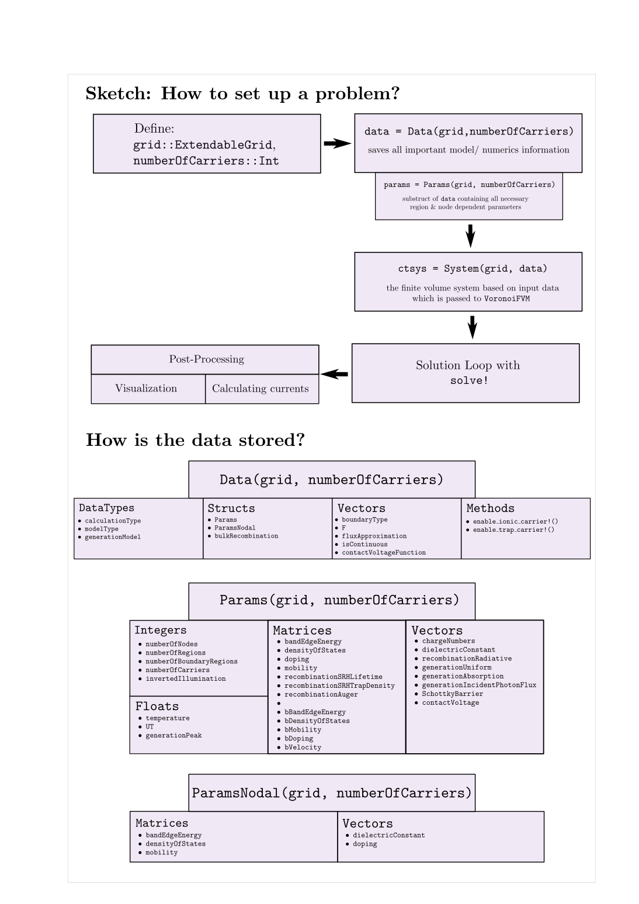
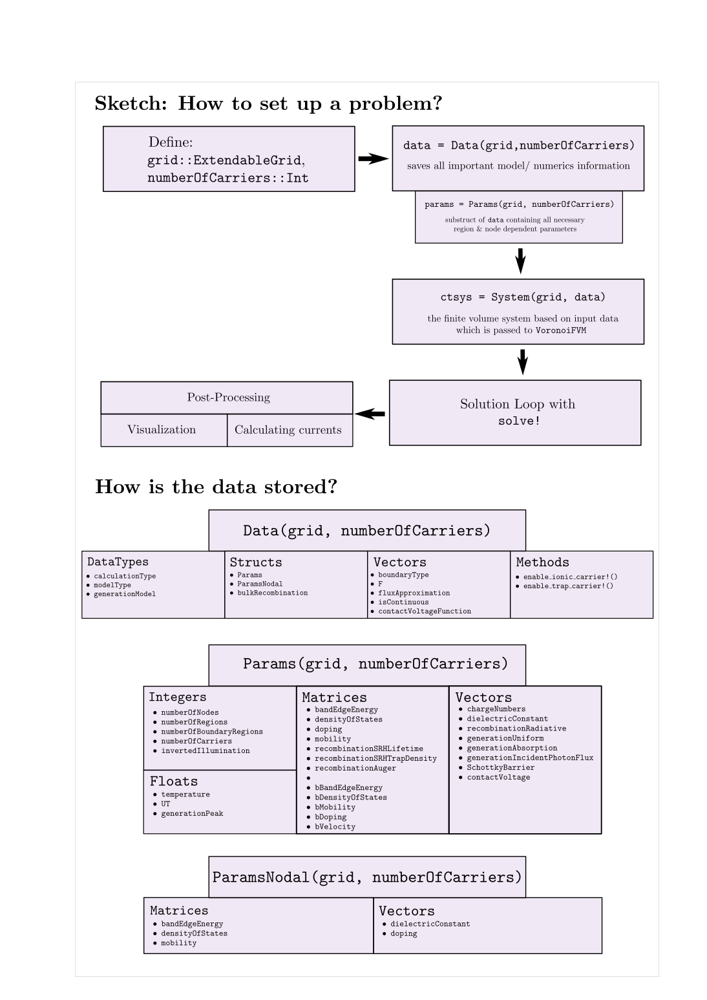

Code overview
The following flow chart explains what needs to be defined when designing new examples. The important information is stored in the Data struct with the most important components listed here.

The following flow chart explains what needs to be defined when designing new examples. The important information is stored in the Data struct with the most important components listed here.

Settings
This document was generated with Documenter.jl version 0.27.18 on Tuesday 31 May 2022. Using Julia version 1.7.3.